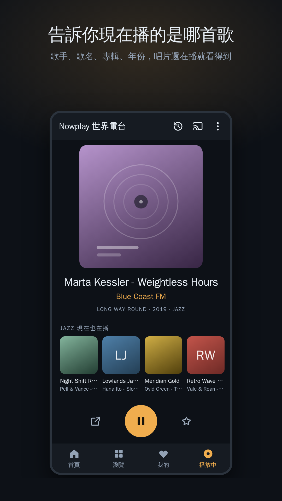
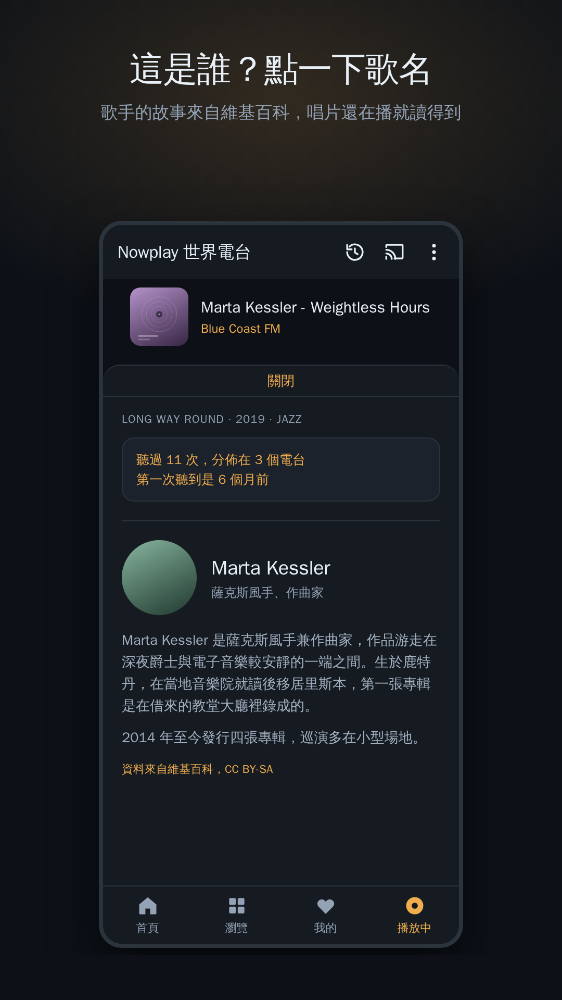
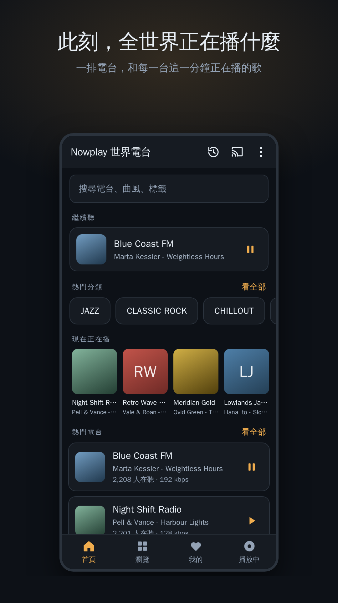
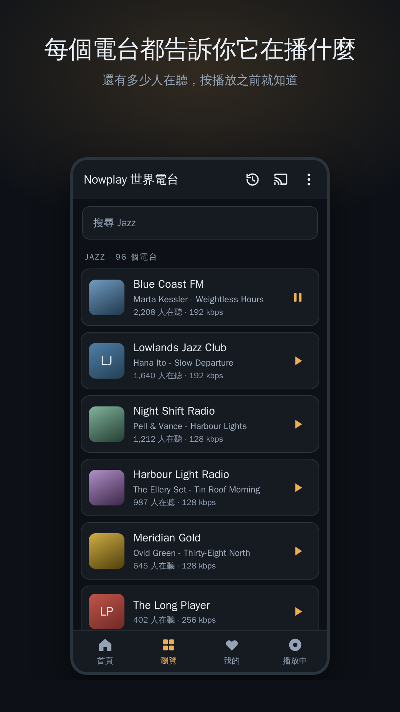
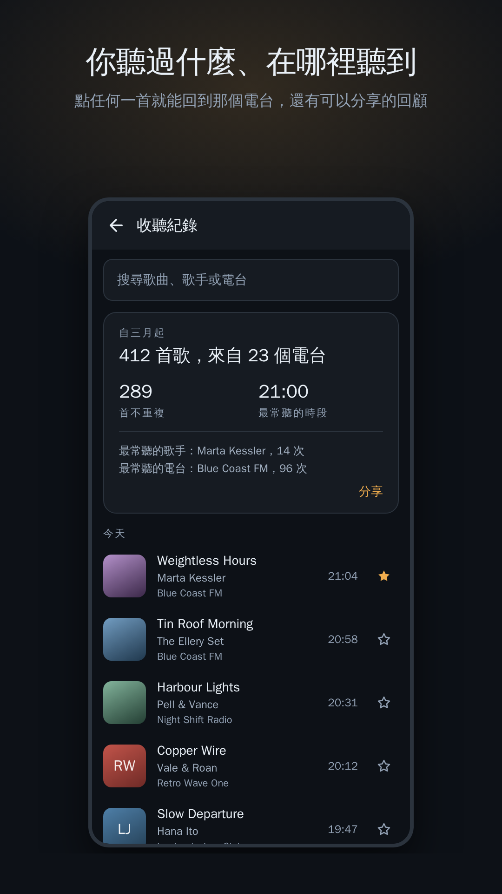

告訴你現在播的是哪首歌的電台
網路電台，唱片還在播的時候，歌手、歌名、專輯、年份就在畫面上。點一下歌名，讀歌手的故事。你聽過的每一首都會記下來，連同是在哪個電台聽到的。
在 Google Play 取得
這是誰？
點一下歌名，歌手的故事就從維基百科來，用你的語言，唱片還在播。
此刻正在播
一排電台，和每一台這一分鐘正在播的歌，幾分鐘檢查一次，全世界都在。
2,000 多個真的能聽的電台
每個電台都在一週內連線檢查過，死掉的連結在你遇到之前就拿掉了。



